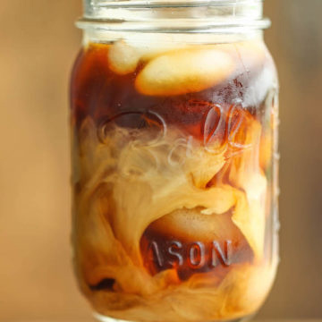

1/2 cup sugar 1/2 teaspoon vanilla extract 1 cup coffee, at room temperature 2 tablespoons half and half*, or more, to taste
To make the simple syrup, combine sugar and 1 cup water in a medium saucepan over medium heat, stirring until the sugar has dissolved. Let cool completely and stir in vanilla extract; set aside in the refrigerator until ready to serve. Serve coffee over ice with half and half and simple syrup, to taste.